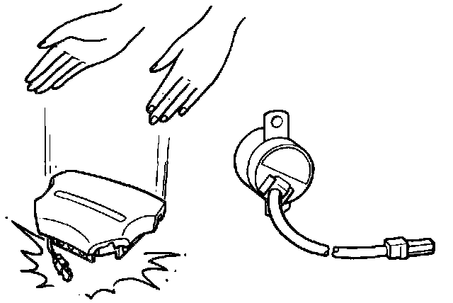

General Precautions
GENERAL PRECAUTIONS
- Carefully inspect any SRS part before you install it. Do not install any part that shows signs of being dropped or improperly handled, such as dents, cracks or deformation:
- Airbag assembly (driver's and passenger's).
- Dash sensors.
- Cable reel.
- SRS unit.
- Seat belt pretensioner (driver's and passenger's).

- Use only a digital multimeter (KS-AHM-32-003) to check the system. Using an analog circuit tester may cause an accidental deployment and possible injury.
- Do not install used SRS parts from another car. When making SRS repairs, use only new parts.
- Except when performing electrical inspections, always disconnect both the negative cable and positive cable at the battery before beginning work.
- Replacement of the combination light and wiper/washer switches and cruise control switch can be done without removing the steering wheel:
- Combination light and wiper/washer switch replacement.
- Cruise control switch replacement.